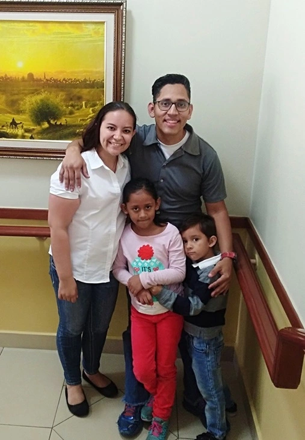

Home
About Me
My name is Alexis Machuca. My family and I live in Guatemala City, Guatemala. I am very fortunate to have a beautiful family. My wife is Guatemalan, and I am Honduran we both grew up knowing the gospel, and we met for the first time while I was serving a full-time mission in Guatemala.
My two children were born in Honduras, but after a while, we decided to move to Guatemala. I consider myself a technology lover, and I also really enjoy musical instruments, especially the guitar.
Student Photo
Web Certificate Courses
Courses that you have completed are clearly marked in green.
The total credits for course listed above is: 0